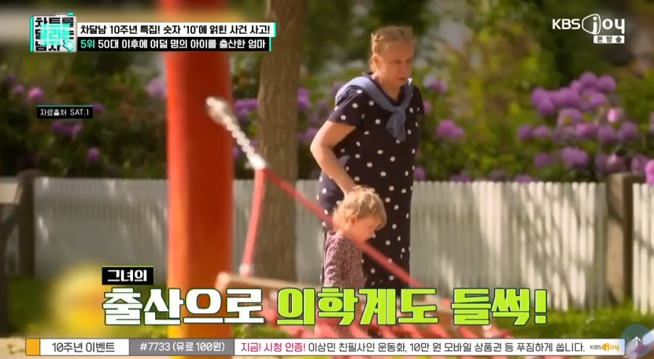
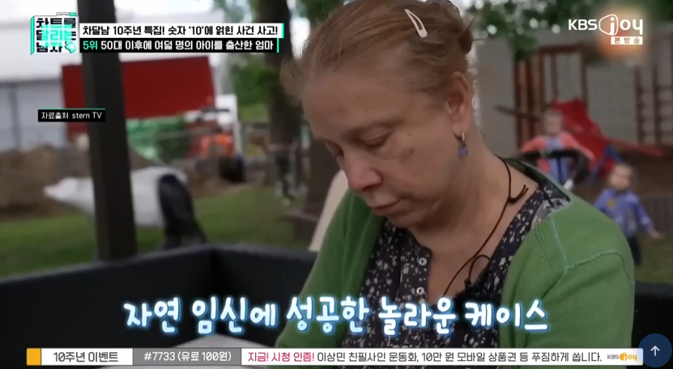

50대 이후로 8명의 자녀를 낳고 마지막으로 66살에 아들 낳음


50대 이후로 8명의 자녀를 낳고 마지막으로 66살에 아들 낳음
계속 임신해서 월경횟수 다 안차서 가능한듯? 임신 1회당 12회 월경 세이브된듯
남은 난자랑은 별개로 그냥 나이 생각하면 타고난 인자강인 듯
저 여성분 딸들은 저 유전자 받아서 나중에 60대되도 임신될까 궁금하네
그러기엔 50대 이후로 8명 출산임.
대충 얼마나 박아댄거야
인자강인데? 운동량 보면 보통 여자가아님.
66살까지 폐경 안온게 머단
여자가 나이 먹으면 임신 확률이 엄청 낮은데 남편이 섹스머신인가 보네
ㅋㅋ 결론이 왜 그렇게 나냐
폐경이 와도 이상할 나이가 아닌데 임신이라니 진짜 대단하네
임신하면 폐경이 계속 뒤로 밀리니깐 가능하긴 할듯
본문을 좀 봐. 50대 이후에 8명을 출산했다잖아. 일반적인 여성의 폐경 나이대는 50세 전후임.
그러니까 보통 여성이면 이미 폐경이 왔을 나이에 추가로 8명을 더 낳았다는 소리.
일반적으로 애를 2~3명 낳는 여성의 폐경이 50대인데 저 여자는 10명이라고 하니까 그만큼 밀렸다는 소리지
10명중 8명이 50대에 낳았데잖아
대
와...............
와 66세에 출산 ㄷㄷㄷㄷ
폐경은,, 없는 거야???
ㅋㅋㅋㅋ 그냥 인자강
부모가 결국 막내들 성인 될때까지 제대로 키우지 못할텐데 저렇게 대책없이 낳는 것도 adhd아닐까
첫째나 둘째 죶될듯 ㅋㅋㅋ...
Adhd랑 무슨 상관이야 ㅋㅋ
충동조절 장애
잠깐, 우리가 생각해야 할 것은, 50세 이상의 8명의 아이를 낳은 할머니와 지속적으로 임신할때까지 노력한 저 할아버지가 아닐까 생각이 든다
저건 앞으로 키우는게 더 문제 아님? 체력이 가능한가? ㄷㄷ
"수영을 수킬로 할수있고 알파인스키와 패러글라이딩을 취미로 합니다"
이색히들 생물시간에 졸았나 ㅋㅋ 생리한다고 임신하는거 아냐 미친새끼들아 ㅋㅋㅋ
그럼 가수 미나가 왜 애 못낳고 저러고있냐
이효리 미나 에일리 채리나 왜 다 못낳고 있겠냐고 생리한다 =임신이 아니라고 ㅋㅋㅋ
수영을 기본 킬로미터ㄷㄷ
강철 보X군
이게 말이 돼? ㄷㄷㄷ 대단하네